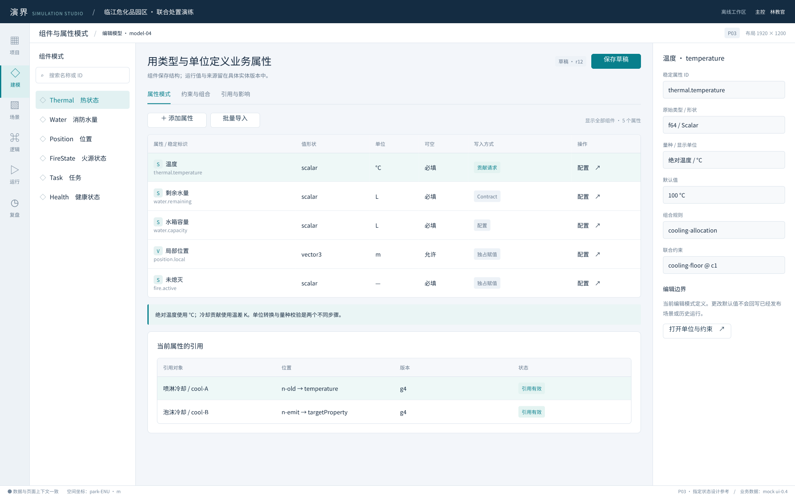
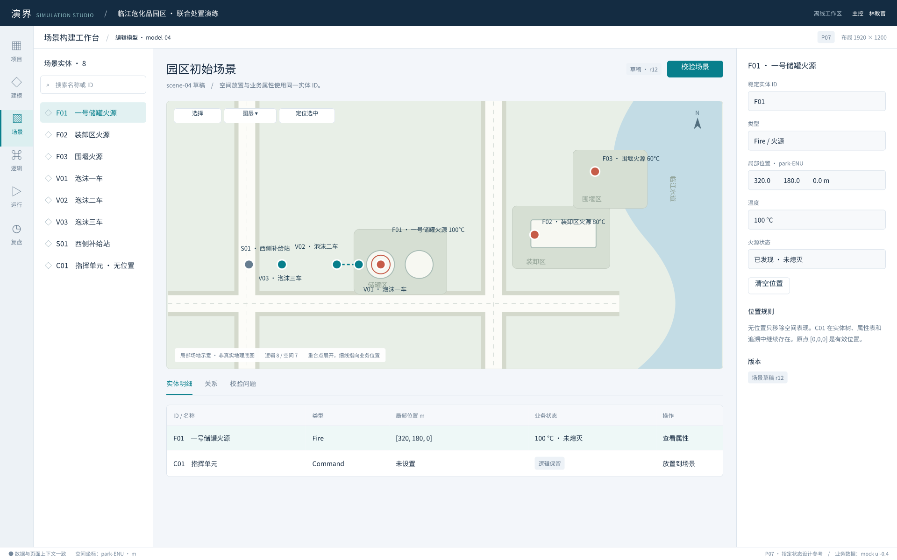
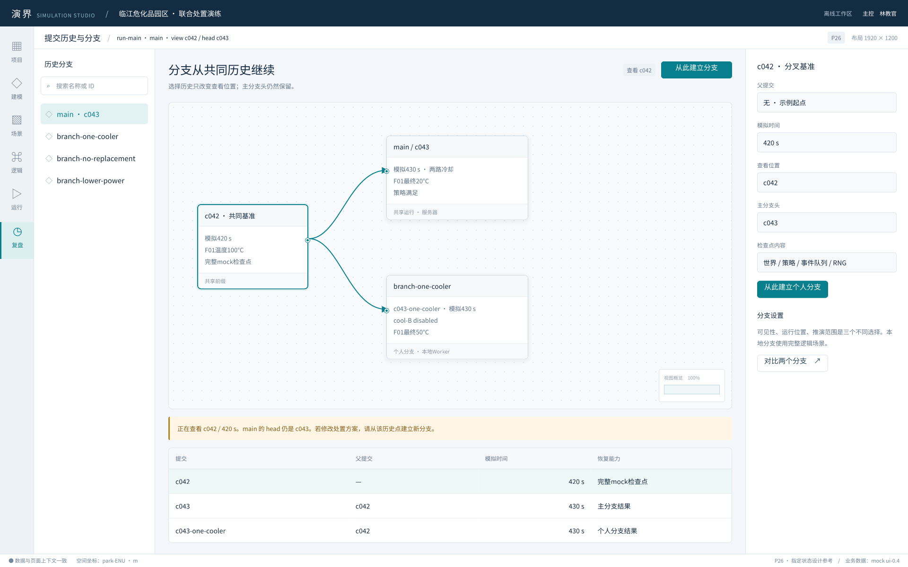
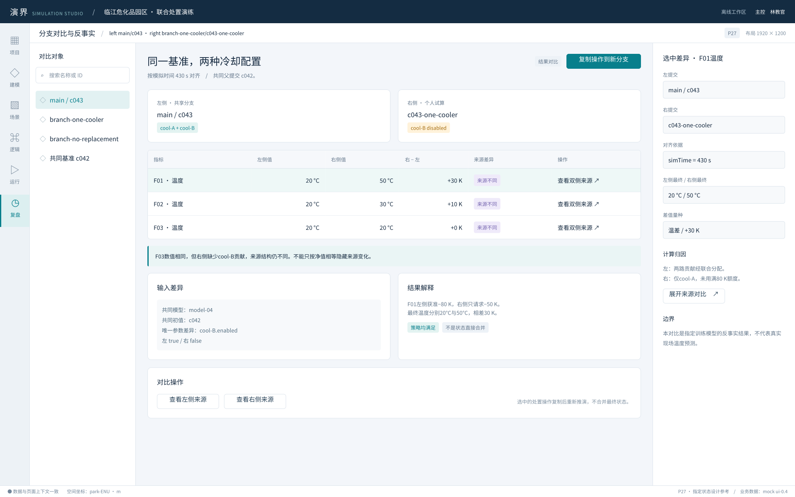
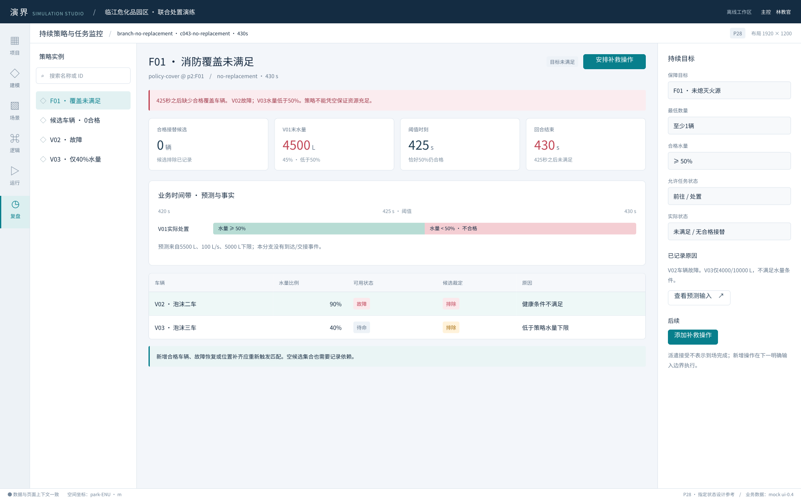

P05 实体模板与覆盖

P07 场景构建工作台

P12 System 外层调度

P14 System 内部逻辑

P15 属性与变量绑定选择器

P20 演练运行工作台

P22 工作流批次与节点调试

P23 联合约束与贡献裁决

P24 属性演化链与输入来源

P26 提交历史与分支

P27 分支对比与反事实

关键页面的独立设计图片与HTML画面源。每页均对应pages/独立规格；这是指定状态参考，编辑与运行能力以实施规格为准。